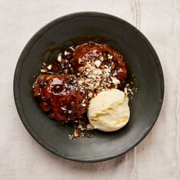

Rum and currant dumplings with speculaas caramel

For the spice mix
For the sauce
For the dumplings
Mix all the speculaas spice mix ingredients and store in a small jar.
On a medium heat, warm the sugar, water and a teaspoon of speculaas mix in a 20cm saucepan for which you have a lid, until the sugar dissolves.
Put the currants and rum in a small saucepan on a medium-high heat. Bring to a boil, simmer for a minute, then tip into a bowl and leave to plump up for 20 minutes. Return the pan to the heat, add the butter and golden syrup, cook just until the butter has melted, then set aside. In a small bowl, whisk the milk and bicarb. In a medium bowl, mix the flour, half a teaspoon of flaked salt, the milk mix, syrup mixture, currants, rum and lemon zest into a smooth batter.
Bring the sugar syrup to a boil on a medium-high heat. Use two dessertspoons to form the batter into 12 walnut-sized balls (they won’t be perfect) and carefully lower them one by one into the bubbling syrup – they will start to puff up quickly. Turn the heat to low, cover and leave to simmer very gently for 70 minutes, resisting the urge to lift the lid. The dumplings will double in size and the syrup will turn to a thick, dark caramel.
Stir in the lemon juice, then divide the dumplings and caramel between four (or six) bowls. Sprinkle with sea salt, top with a spoon of ice-cream or crème fraiche, sprinkle over the almonds and serve at once.